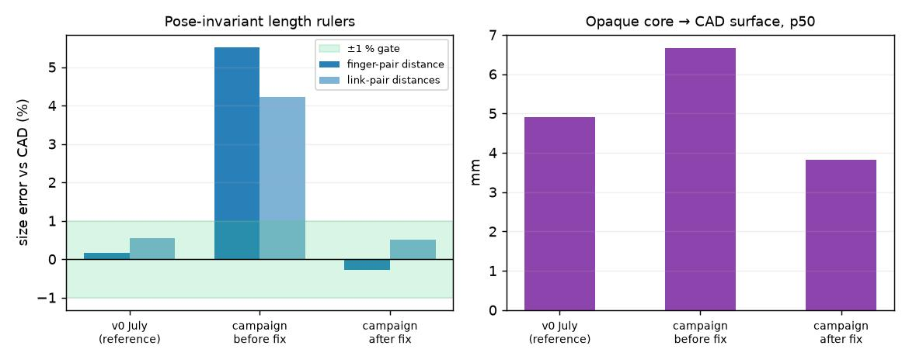
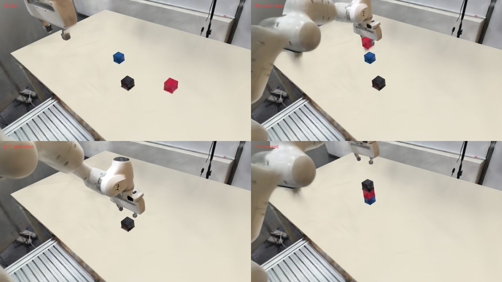

Robot Learning
Multi-View Demonstration Augmentation
AIDAS Lab · SNU · Ongoing
Ongoing collaborationTurning workcell captures and robot motion into reusable 3D assets that render the same manipulation episode from multiple cameras.
At a glance
- The problem
- Collecting robot demonstrations is costly, and a good-looking reconstruction may have the wrong scale or motion.
- The approach
- Align reconstructed assets to the real robot, animate them with its kinematics, and render calibrated views.
- Outcome / status
- A working scene-generation and validation pipeline; the broader robot-learning collaboration remains ongoing.
- My contribution
- Responsible for the 3DGS data augmentation module within a larger collaborative dataset project.

From a captured workcell to reusable demonstrations
Capture
Workcell images, camera calibration, and robot demonstrations.
Reconstruct and align
Gaussian assets are checked against physical dimensions and robot CAD.
Repose and render
Robot kinematics drive the link assets; calibrated cameras observe the same episode.
Validate and export
Check geometry, grasp state, continuity, and visibility before writing a dataset.
Engineering decisions
My part: making reconstructed scenes reusable
I develop the 3DGS augmentation module within a larger robotic dataset collaboration. The module connects captured appearance to calibrated cameras, robot link geometry, and demonstration motion. It builds on RoboSplat and SplatSim; my focus is the reconstruction, alignment, asset preparation, rendering, and validation needed for the FR3 workcell.
Sources: RoboSplat upstream · SplatSim upstream · My FR3 pipeline
Looking aligned is not the same as being metrically aligned
A soft Gaussian silhouette can make an incorrectly scaled robot look plausible. I therefore use calibration and distances between rigid robot parts to check scale against the robot CAD model. Registration is refined on opaque Gaussian cores with scale fixed. This makes the alignment decision depend on physical dimensions.


Motion, appearance, and object state must agree
Each Gaussian belongs to a robot link. Inverse forward kinematics brings those assets into a reusable reference pose; forward kinematics then animates them along a trajectory. Explicit attachment and release rules keep objects connected to the gripper at the right times. Camera visibility and object-pose continuity are checked before an episode is accepted.


Turn visible failures into explicit checks
Missing cube bottoms, a hazy tabletop, and objects disappearing from the wrist view exposed different pipeline failures. The module uses targeted asset repairs and numerical acceptance checks rather than relying only on a convincing render. The next research question is how such generated data affects downstream robot learning; generation checks alone do not answer it.
Implementation notes & source evidence
My scope within the collaboration
My contribution to the broader robotic dataset collaboration is the 3D Gaussian Splatting augmentation module. It turns workcell captures and demonstrations into reusable scene assets that can be reposed and rendered as synchronized training views. The collaboration and manuscript remain in progress.
Sources: Module overview
Metric scale and registration
A scene can look convincing and still have the wrong metric scale. The pipeline uses ChArUco calibration and pose-invariant lengths between rigid robot parts to check scale against the URDF. Registration is then refined using high-opacity Gaussian cores with scale held fixed. This avoids letting a diffuse reconstruction shell determine the robot’s dimensions.
Sources: Fixed-scale core ICP · Alignment measurements
Connecting appearance to kinematics
Gaussians are assigned to the nearest CAD link surface. Applying the inverse of each link’s forward-kinematics transform converts the posed robot geometry into canonical link assets, which can then be reposed along a demonstration. An explicit kinematic contract defines object attachment and release, keeping rendered appearance, joint motion, and object motion in a consistent coordinate system.
Sources: CAD-based link assignment · Asset and rendering pipeline
Repairing capture-specific failure modes
Static captures miss cube bottoms, and a low-texture tabletop can reconstruct as haze. The pipeline merges only missing cube geometry from a rolled capture and replaces tabletop fog with a sheet on the calibrated plane, bounded by the measured table footprint. These are targeted scene repairs, not an assumption that novel-view quality alone guarantees usable manipulation geometry.
Sources: Missing-surface reconstruction · Table surface repair
Validation before dataset generation
The module checks geometry, forward-kinematics round trips, grasp state, object-pose continuity, wrist-camera visibility, and black frames before accepting generated episodes. Resumable stages and immutable dataset shards separate long generation jobs from release validation. The engineering focus is to turn visible rendering defects into measurable acceptance criteria; dataset-generation checks do not by themselves establish downstream policy success.
Sources: Generation and release gates · Validation scope